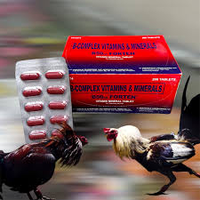

| 💊 B-50 💊 |
|  |
B-50 💰 Price: ₱7 per piece 📌 Description: B-50 is a vitamin B-complex supplement that helps improve appetite, boost energy, and support healthy metabolism of animals. ✅ Benefits: • Improves appetite • Boosts energy and stamina • Supports proper metabolism • Helps prevent vitamin B deficiency 🐔🐶🐱 Suitable For: Poultry, dogs, cats, and other livestock 🕒 Usage Guide: Give as recommended or mix with feed or water. Always provide clean drinking water. |